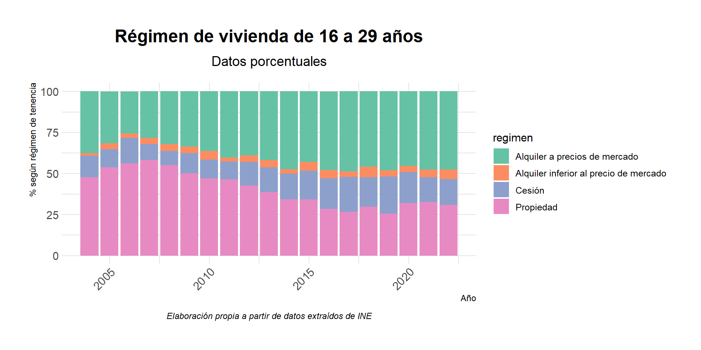

La vivienda, un bien inalcanzable
La vivienda, un bien inalcanzable.

Renta neta media por persona
Renta neta media por persona
Porcentaje de parados según la edad
#> X Sexo Edad Tipo.de.jornada Tipo.de.dato Periodo Total
#> 1 1 Ambos sexos Total Total Valor absoluto 2022 20.390,6
#> 2 2 Ambos sexos Total Total Valor absoluto 2021 19.773,6
#> 3 3 Ambos sexos Total Total Valor absoluto 2020 19.202,4
#> 4 4 Ambos sexos Total Total Valor absoluto 2019 19.779,3
#> 5 5 Ambos sexos Total Total Valor absoluto 2018 19.327,7
#> 6 6 Ambos sexos Total Total Valor absoluto 2017 18.824,8
#> X Sexo Edad Tipo.de.jornada Tipo.de.dato Periodo Total
#> 1 1 Ambos sexos Total Total Valor absoluto 2022 20390.6
#> 2 2 Ambos sexos Total Total Valor absoluto 2021 19773.6
#> 3 3 Ambos sexos Total Total Valor absoluto 2020 19202.4
#> 4 4 Ambos sexos Total Total Valor absoluto 2019 19779.3
#> 5 5 Ambos sexos Total Total Valor absoluto 2018 19327.7
#> 6 6 Ambos sexos Total Total Valor absoluto 2017 18824.8
#> Edad Sexo Unidad Periodo Total
#> 1 Total Ambos sexos Valor absoluto 2023T3 24.121,0
#> 2 Total Ambos sexos Valor absoluto 2023T2 23.819,2
#> 3 Total Ambos sexos Valor absoluto 2023T1 23.580,5
#> 4 Total Ambos sexos Valor absoluto 2022T4 23.487,8
#> 5 Total Ambos sexos Valor absoluto 2022T3 23.525,9
#> 6 Total Ambos sexos Valor absoluto 2022T2 23.387,4
#> Edad Sexo Unidad Periodo Total
#> 1 Total Ambos sexos Valor absoluto 2023T3 24121.0
#> 2 Total Ambos sexos Valor absoluto 2023T2 23819.2
#> 3 Total Ambos sexos Valor absoluto 2023T1 23580.5
#> 4 Total Ambos sexos Valor absoluto 2022T4 23487.8
#> 5 Total Ambos sexos Valor absoluto 2022T3 23525.9
#> 6 Total Ambos sexos Valor absoluto 2022T2 23387.4
#> Edad Sexo Unidad Periodo Total
#> 1 De 16 a 19 años Ambos sexos Valor absoluto 2023T3 353.4
#> 2 De 16 a 19 años Ambos sexos Valor absoluto 2023T2 284.3
#> 3 De 16 a 19 años Ambos sexos Valor absoluto 2023T1 258.7
#> 4 De 16 a 19 años Ambos sexos Valor absoluto 2022T4 268.2
#> 5 De 16 a 19 años Ambos sexos Valor absoluto 2022T3 333.2
#> 6 De 16 a 19 años Ambos sexos Valor absoluto 2022T2 295.7
#> Edad Sexo Unidad Periodo Total
#> 1 Total Ambos sexos Valor absoluto 2023T3 2.855,2
#> 2 Total Ambos sexos Valor absoluto 2023T2 2.762,5
#> 3 Total Ambos sexos Valor absoluto 2023T1 3.127,8
#> 4 Total Ambos sexos Valor absoluto 2022T4 3.024,0
#> 5 Total Ambos sexos Valor absoluto 2022T3 2.980,2
#> 6 Total Ambos sexos Valor absoluto 2022T2 2.919,4
#> Edad Sexo Unidad Periodo Total
#> 1 Total Ambos sexos Valor absoluto 2023T3 2855.2
#> 2 Total Ambos sexos Valor absoluto 2023T2 2762.5
#> 3 Total Ambos sexos Valor absoluto 2023T1 3127.8
#> 4 Total Ambos sexos Valor absoluto 2022T4 3024.0
#> 5 Total Ambos sexos Valor absoluto 2022T3 2980.2
#> 6 Total Ambos sexos Valor absoluto 2022T2 2919.4
#> Edad Sexo Unidad Periodo Total
#> 1 De 16 a 19 años Ambos sexos Valor absoluto 2023T3 142.0
#> 2 De 16 a 19 años Ambos sexos Valor absoluto 2023T2 122.1
#> 3 De 16 a 19 años Ambos sexos Valor absoluto 2023T1 121.4
#> 4 De 16 a 19 años Ambos sexos Valor absoluto 2022T4 114.8
#> 5 De 16 a 19 años Ambos sexos Valor absoluto 2022T3 151.4
#> 6 De 16 a 19 años Ambos sexos Valor absoluto 2022T2 144.0
#> Año grupo_edad num_parados num_activos num_ocupados
#> 1 2002 De 16 a 34 años 973.125 5449.350 4476.225
#> 2 2002 Mayores de 35 727.850 8622.975 7895.125
#> 3 2003 De 16 a 34 años 999.050 5571.700 4572.650
#> 4 2003 Mayores de 35 764.300 9043.125 8278.825
#> 5 2004 De 16 a 34 años 942.150 5596.725 4654.575
#> 6 2004 Mayores de 35 791.800 9414.925 8623.125Porcentaje de contratos de Jornada completa por edad
Índice del nivel de Precios de la vivienda a nivel nacional

Régimen de viviendas de 16 a 29 años

Otros gráficos bonitos pero poco útiles sobre el salario
Rigeline por grupo de edad
Barras agrupadas por edad